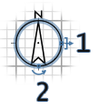
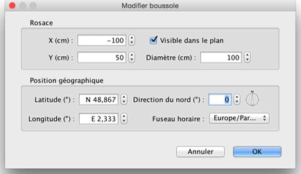

| Modification de la boussole et de la position géographique | |||
Chaque nouveau logement affiche une rosace en haut à gauche de son plan. Comme pour les autres objets du plan, cette rosace peut être déplacée en la sélectionnant puis en la glissant-déposant ou avec les touches du clavier. Quand la rosace est le seul objet sélectionné dans le plan, vous pouvez modifier sa taille ou son orientation avec ses indicateurs.  |
|
Quand le pointeur de la souris survole l'un de ces points, celui-ci change d'aspect pour indiquer que vous pouvez glisser-déposer ce point. La rosace et la position géographique de votre logement peuvent être aussi modifiées grâce à leur panneau, en double-cliquant sur la rosace dans le plan, ou en choisissant le menu Plan > Modifier la boussole....  Dans le panneau de la boussole, vous pouvez changer la position, le diamètre, la direction du nord de la rosace et spécifier si elle doit être affichée ou non dans le plan. Vous pouvez aussi modifier la latitude et la longitude de la position géographique du logement et le fuseau horaire de sa région. |
|